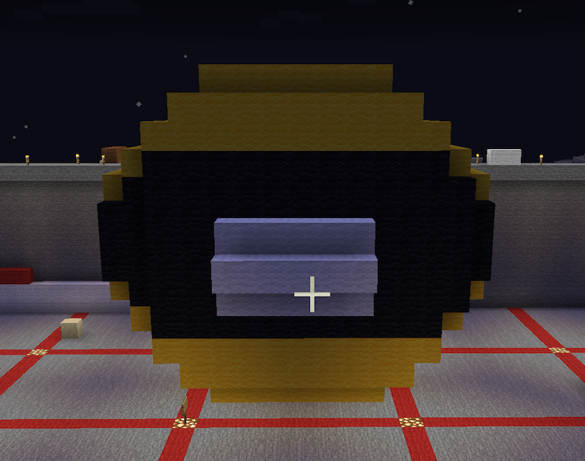
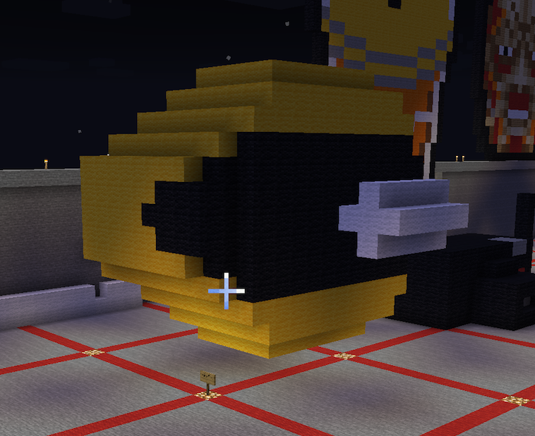
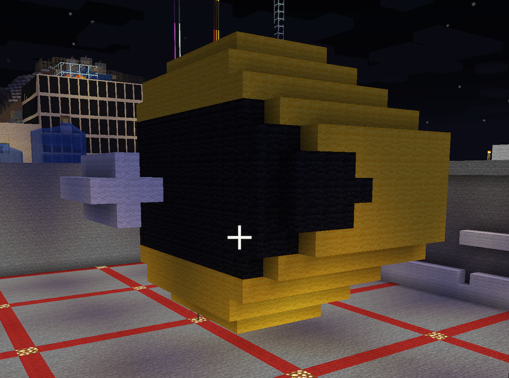

3D Mine Craft
The objective of this project is to create an object of cultural significance using a Minecraft.
The iconic game Pac-Man forever revolutionized gaming and later would become a key part of the art of video games. This is a refreshing take on the famous classic 2D character, recreated in 3D in an open "Sandbox" environment.
Mediums Used: Minecraft

×


×


×